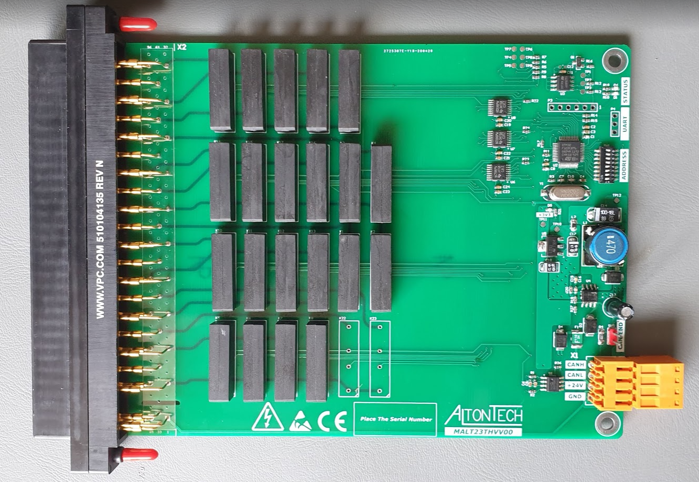
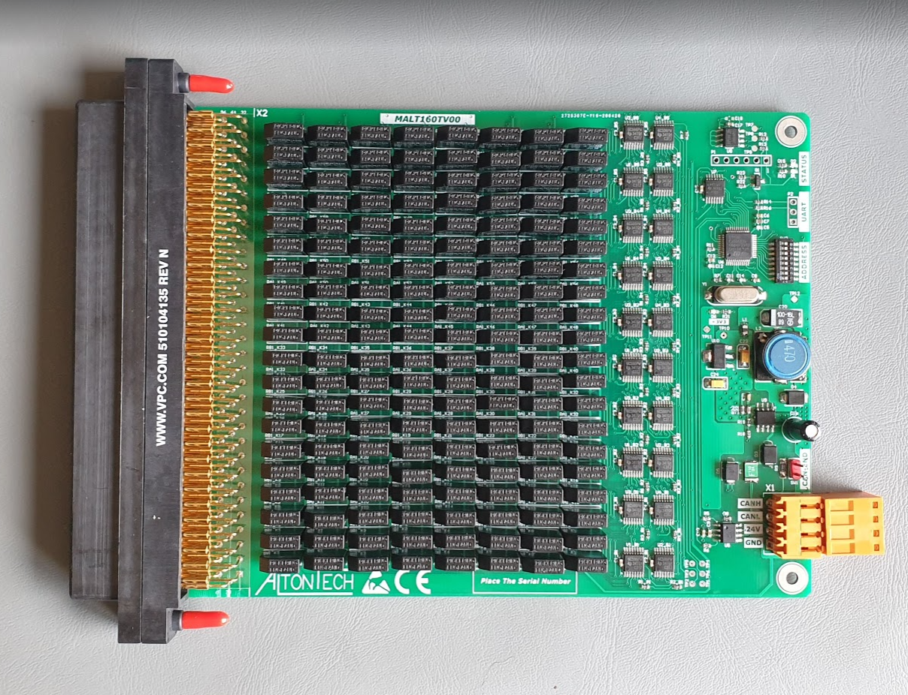

Termékek
| Family Name | First Name | Leírás | PCB Version | Family Code | Option Code | 6TL Kompatibilitás | ||
| MALTMMI | MALTMMI |
|
MALTMMIV00 | 0x00 | 0x00 | Részleges. Az MMI-nak felel meg. | ||
 |
MALT40IO | MALT40IO |
|
MALT16PINV00 | 0x01 | 0x?? | Részleges. |
|
 |
MALT132 | MALT132 |
|
MALT132V00 | 0x03 | 0x00 | Teljes. A YAV90132 felel meg. |
|
|  | MALT132 | MALT23THV |
|
MALT23THVV00 | 0x03 | 0x10 | Részleges.A YAV90132 felel meg. | |
 |
MALT16PIN | MALT16PIN |
|
MALT16PINV00 | 0x05 | 0x00 | Részleges. |
|
|  | MALT160T | MALT160T |
|
MALT160TV00 | 0x15 | 0x05 | Részleges. A YAV90057 felel meg. |